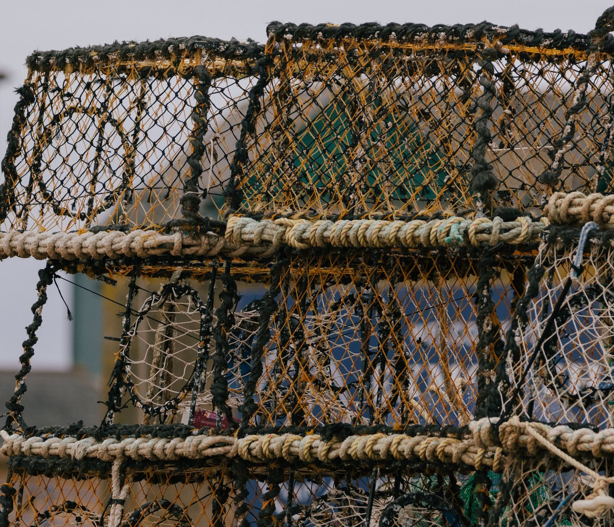
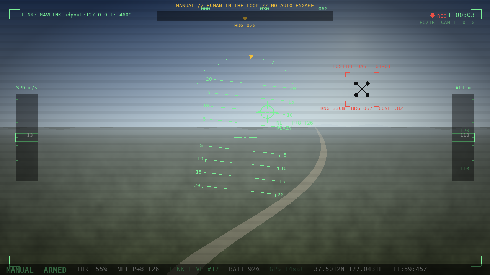

Counter-UAS · Physical interception
TaloNet is an airborne interceptor that nets a hostile UAS in flight, then carries it home for exploitation — or clears it from populated airspace and sets it down where it can do no harm. No jamming. No spoofing. A physical capture, with the operator in command.
The problem
Commercial and improvised UAS are cheap, numerous, and increasingly autonomous. The standard answers each carry a cost: electronic attack is blunt and degrades shared spectrum, directed energy and gunfire are hard to authorize over people, and a downed aircraft becomes falling debris and lost evidence.
TaloNet was built around a different premise — close the distance, capture the aircraft whole, and decide on the ground what happens next. The threat is removed, the airframe survives, and everything it was carrying is preserved for analysis.
How it works
Onboard electro-optical and infrared sensors, fused with RTK-grade navigation, hold the target and feed a stabilized picture back to the operator.
A human classifies the contact and authorizes the intercept from the cockpit. Arm, fire, cinch, and release are deliberate, interlocked actions — never automatic.
A software-aimed launcher fires the net, the catch is cinched to the airframe, and the interceptor returns it to base — or carries it clear and sets it down.

Capabilities
From acquisition to recovery, every link in the chain is on the aircraft or in the operator's hands — not delegated to the network or to chance.
A pan-and-tilt launcher places the net on a moving target, then a cinch line draws the catch closed against the captured aircraft.
Direct FPV flight with a heads-up overlay and keyboard controls. Low latency, full authority, and an unambiguous human decision behind every shot.
GNSS anti-spoofing with Galileo OSNMA and receiver-autonomous integrity monitoring keeps position truth even under deliberate interference.
MAVLink 2 message signing and an authenticated RF link with anti-replay protection close the door on injection and takeover.
A surviving airframe carries its storage, payload, and flight history home — turning every intercept into actionable intelligence.
Bring the catch back for analysis, or carry a hazardous payload clear of people and set it down in open ground. The operator chooses.
The cockpit
The ground station is a single, legible cockpit: live FPV, a heads-up state overlay, and a control scheme tuned for the seconds that matter. Targeting is software-assisted; the trigger is not. Arming, firing, cinching, and release are separate, interlocked commands that only a person can give.

The platform — “Peregrine” interceptor
A coaxial X8 octocopter built to carry a launcher, a catch, and a full sensor suite — and still hold a 2.3:1 thrust margin for the dash and the snatch.
Exploitation — ForensIQ-1
A captured drone is a record. ForensIQ-1 is a sealed, read-only exploitation appliance that turns recovered storage into a chain-of-custody report — including, where the data allows, the geolocated launch point of the hostile aircraft.
Acquisition is write-blocked and hash-verified end to end, so the evidence that comes out is the evidence that went in. The output is intelligence for the commander — never an instruction to act.
Recovered media is logged and sealed under custody.
Write-blocked copy, SHA-256 verified bit for bit.
Flight logs parsed into a trajectory and origin estimate.
Signed PDF and field printout with a custody trail.
Operating envelope
An 8-kilometer radius and a 120 km/h dash put the interceptor on the target before it reaches what it came for. Once the catch is secure, recovery and disposal are a decision, not a default — bring it home, or carry it clear and set it down in open ground away from people.
Engineered to hold
An interceptor is only as trustworthy as its own links. TaloNet protects its navigation and command paths the way the rest of the airframe is built — for the contested case, not the demo.
TaloNet does not jam, spoof, or take over other aircraft. It defends its own systems and captures by physical means.
Get in touch
Walk through the system with our team — capabilities, integration, and evaluation options for your airspace. Tell us a little about your requirement and we'll follow up.